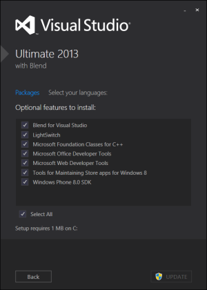
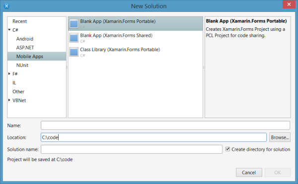
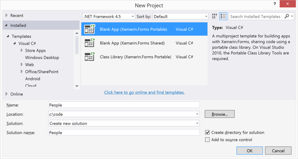

Exercise 1: Determine your database file path
Duration
10 minutes
Lab goals
The main goal here is to determine the location for your database file on each platform you plan to support: Android, iOS, and/or Windows Phone. Your choice of platforms may be limited by your operating system and development environment; for example, you will need a Mac to build and run an iOS app. We recommend you support at least two platforms so you will be able to practice isolating the platform dependencies; however, you will still see the core ideas of the exercise even if you support only a single platform.
You will organize your code using a common Xamarin cross-platform strategy: platform-independent code in a Portable Class Library (PCL) and platform-specific code in platform-specific apps. The high-level steps to achieve this are outlined below.
- Create a Blank App (Xamarin Forms Portable) named People.
-
Add a class named
FileAccessHelperto each of your platform-specific projects. In each class, you will add a static method namedGetLocalFilePaththat takes a filename. Inside the method, you will need to determine the path you want to use for the database file on that platform, append the filename to the path, and return the result. - Display the result on the main page when the app is run, you should display the full path, for example if you use the iOS simulator you will see something like this:
Where should I place database files?
Development Environment Notes
Xamarin Studio on the Mac
Windows Phone is not a supported platform. Please work with the iOS and/or Android platforms only.
Visual Studio on Windows
Visual Studio 2013 Update 3, with the Windows Phone SDK, is required to follow along with the steps in the lab when targeting the Windows Phone platform. To verify whether or not the Windows Phone SDK is installed in your development environment, go to Control Panel > Programs and Features. Select Microsoft Visual Studio 2013 in the list, and select the Change button. In the Visual Studio installation dialog, select the Modify button. If the Windows Phone 8.0 SDK list item does not contain a checkmark beside it, select it and click Update to install the SDK. 
iOS development will require a Mac to build and run. If you do not have a Mac available, please work with the Android and/or Windows Phone platforms only.
Required assets
The provided Part 01 Resources folder contains a subfolder named Part01_Completed with a solution you can use to check your work. Please make sure you have this folder before you begin.
Exercise challenge
Follow the above goals to complete the exercise. You can refer to the step-by-step instructions below to get more detailed information on each goal.
Steps
Below are the step-by-step instructions to implement the exercise.
Create the solution
- Create a Blank App (Xamarin Forms Portable). The app will eventually store information about the people you know so name the app People.  
Add the platform-specific code
-
Add a class named
FileAccessHelperto each of your platform-specific projects and make the class public. -
Add the method shown below to each class.
public static string GetLocalFilePath(string filename) { ... } -
Implement each of the
GetLocalFilePathmethods. The input parameter is the desired name for the database file. Your job is to prepend the platform-specific path to the filename. If you would like a reminder of the common path used on each platform, click the buttons below. If you are working within a Xamarin.iOS project, remember that your path must point to a subdirectory within the Library folder. -
In the App.cs file in the People Portable Class Library, modify the
GetMainPagemethod to include a string parameter nameddisplayText, and set the Text of the Label todisplayText. -
In your platform-specific projects, modify the call to
GetMainPageto pass in the database path. - Build the solution to verify your code will compile.
- Run the app using your preferred platform and verify that the output displays a valid database path.
Summary
In this lab, you implemented a common cross-platform pattern separating out the platform-dependent code into platform-specific projects. You derived the platform-specific database paths for each platform and displayed the result with the main page of the app. In a later exercise, you will extend this solution to connect to SQLite.
There is a completed solution in the Content/Exercises/MobileData/Part 01 Resources folder included with these lab instructions.